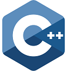
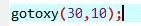
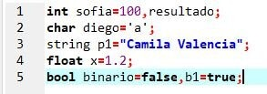
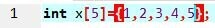

Las Librerias.
Las Librerias.
Las Funciones.
El Main.
Los Vectores.
A C++ primero se le conoció como “C con clases”. Luego se cambió a C++ que significa “incremento de C”, dando a entender que se trata de una extensión del lenguaje de programación C.
InicioSi se busca programar en alto nivel, con la opción de poder bajar incluso a ensamblador, C++ sigue siendo una gran opción, ya que estamos ante un lenguaje de programación muy potente y que se ha mantenido actualizado. La programación de videojuegos sigue siendo una profesión en auge y en ella el conocimiento de Unity y C++ es muy valorado.
InicioLas Librerias.
Las Funciones.
El Main.
Los Vectores.
 iostream: Salida y entrada de información.
iostream: Salida y entrada de información.
time: Permite tener acceso al reloj interno del computador.
string: Permite utilizar cadena de caracteres.
conio y windows: Permite manipular los colores y ventanas del coomputador.
Y stdio, stdlib y using namespace: Son el apoyo de todas.
gotoxy: Se encuentra en la librería conio. h . gotoxy mueve el cursor de la ventana de texto a la posición según las coordenadas especificadas por los argumentos x e y..
Inicioint: Sirve para manejar números enteros. Ejemplo, 1, 2, 3, 4, 5...
char: Sirve para guardar una única letra. Ejemplo, 'a', 'b', 'c'.
string: Sirve para guardar palabras. Ejemplo, "Camila", "Valencia".
float: Sirve para guardar décimales. Ejemplo, 1.2, 3.5, 5.8.
bool: Sirve para guardar números binarios. Ejemplo, 1(true) y 0(false).
 Los vectores son la formación, matriz, a una zona de almacenamiento contiguo que contiene una serie de elementos del mismo tipo, los elementos de la matriz son: el tamaño: es el numero de cajones que se desean. Ejemplo, [7] y el nombre:es el nombre del vector. Ejemplo, x, cami.
El esta dentro de la variable int.